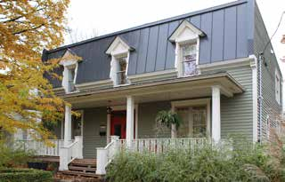

Boomtown house with false mansard La maison Boomtown à fausse mansarde

© Ville de Saint-Lambert / Patri-Arch (G. Mongrain, M. Dubois), Répertoire des courants architecturaux, fiche 4

© Ville de Saint-Lambert / Patri-Arch (G. Mongrain, M. Dubois), Répertoire des courants architecturaux, fiche 4
A flat-roofed brick house wearing a mansard as a hat. Montréal builders bolted the steep lower slope of a Second Empire roof onto the front of a cheap Boomtown box, hung dormers half in the wall and half in the slope, and dressed the lot in turned wood. It sits at the head of the Boomtown family and links Saint-Lambert to Mount Royal's "maison faubourienne".
"Un amalgame intéressant entre la construction à toit plat avec couronnement et l'habitation à mansarde d'influence Second Empire": from the late 19th century Montréal contractors combined the modernity and low cost of the flat-roofed Boomtown house with the elegance of the mansard, plating the brisis onto the façade as a crown. Like the true mansard house it ran out of steam from the 1910s.
| Tenure / plan | single-family |
|---|---|
| Storeys | 2 |
| Roof form | false-mansard |
| Roof pitch | 0° |
| Window proportion | vertical |
| Principal cladding | clay-brick, roughcast, wood |
| Roofing | see materials |
| Garage | none |
| Lot width | – |
| Front setback | – |
| Side setback | – |
| Front yard green | – |
What Répertoire des courants architecturaux says about this type
- A Montréal model that enjoyed real popularity in Saint-Lambert on detached and semi-detached houses; fades from the 1910s in favour of plainer buildings.
- Rectangular body of two storeys, moderately raised; flat or gently rear-sloping roof with a false mansard as crown; detached or semi-detached.
- Wood gallery under an awning independent of the main roof; verandas and oriels also in wood.
- Corps de bâtiment rectangulaire de deux étages, moyennement exhaussé du sol, à toit plat ou à faible pente vers l'arrière avec fausse mansarde. La maison peut être isolée ou jumelée.
- Une galerie en bois est protégée par une toiture indépendante (auvent) du toit principal. … Les vérandas et les oriels (bow-windows) doivent aussi être en bois.
- Second Empire décor confined to the crown, with elaborate woodwork: pendant dormers half in the wall and half in the false mansard, ornamented like the cornice and the gallery.
- Decorative woodwork on the gallery (worked piers, railings, brackets) and on the dormers; a cornice usually marks the base of the false mansard; chambranles and corner boards on wood-clad houses; uniformity between the two units of a semi-detached pair.
- Des boiseries décoratives ornent la galerie (piliers ouvragés, garde-corps et aisseliers) et les lucarnes. Une corniche décore habituellement le bas de la fausse mansarde. … Pour les maisons jumelées, s'assurer d'une uniformité entre les deux unités.
- Traditional wood doors with glazing.
- Two-leaf wood casements with six large panes, or guillotine windows.
- Pendant gabled dormers piercing the false mansard, often elaborately ornamented.
- Portes en bois traditionnelles avec vitrage.
- Fenêtres à deux battants en bois munies de six grands carreaux ou fenêtres à guillotine selon le modèle utilisé à l'origine.
- Lucarnes pendantes à pignon qui percent la fausse mansarde. … L'ornementation des lucarnes est souvent élaborée.
- Brick, roughcast or wood walls.
- False mansard in traditional sheet metal (à baguettes, pincée, en plaques) or slate.
- Pour les murs extérieurs en brique, aucun matériau d'imitation n'est acceptable. … Pour la fausse mansarde, la tôle traditionnelle (à baguettes, pincée ou en plaques) et l'ardoise sont à privilégier.
- No imitation brick; do not paint masonry; identical replacement for roughcast/wood; industrial claddings proscribed; asphalt shingle, industrial metal and synthetics proscribed on the false mansard.
- Do not remove or resize the gallery; painted wood railings of traditional make; verandas and oriels in wood.
- Steel/PVC doors unsuitable; avoid sliding, crank, undivided, aluminium or PVC windows.
- Do not raise foundations or alter the false mansard's dimensions; side/rear reduced-volume additions only.
Same word elsewhere
- Central-gable house (maison à pignon central) (Gatineau)
- Complex gabled-roof house (maison à toit complexe à pignon) (Gatineau)
- Mansard-roofed house with gable wall on the façade (maison à toit mansardé avec mur pignon en façade) (Gatineau)
- One-and-a-half-storey wooden matchstick house (maison allumette en bois d'un étage et demi) (Gatineau)
- Wood matchstick house of two to two and a half storeys (maison allumette en bois de deux à deux étages et demi) (Gatineau)
- Brick matchbox house, two to two and a half storeys (maison allumette en brique de deux à deux étages et demi) (Gatineau)
- Cubic house (maison cubique) (Gatineau)
- CIP executive's house (maison de cadre de la CIP) (Gatineau)
- Flat-roofed wood house (maison en bois à toit plat) (Gatineau)
- Flat-roofed brick house (maison en brique à toit plat) (Gatineau)
- L-plan house with a two-slope (gable) roof (maison avec plan en L à toit à deux versants) (Gatineau)
- English-revival stone house (Hampstead)
- Postwar detached house (Hampstead)
- Franco-Québécois transitional house (Lévis)
- Québécois traditional house (Lévis)
- Neoclassical house (Lévis)
- Second Empire house (Lévis)
- Victorian house (Lévis)
- American vernacular house (Lévis)
- Beaux-Arts house (Lévis)
- Boomtown house (Lévis)
- Flat-roofed house (Lévis)
- Garden City House (Town of Mount Royal)
- Faubourg House (Town of Mount Royal)
- Canadian House (Town of Mount Royal)
- New England House (Town of Mount Royal)
- Georgian House (Town of Mount Royal)
- English Manor House (Town of Mount Royal)
- Bungalow (Town of Mount Royal)
- Cottage (Town of Mount Royal)
- Split-Level (Town of Mount Royal)
- Prairie House (Town of Mount Royal)
- Semi-detached single-family house (Outremont (borough of Montréal))
- Detached single-family house (Outremont (borough of Montréal))
- Modern house on the flank (Outremont (borough of Montréal))
- Faubourg house (Le Plateau-Mont-Royal (borough of Montréal))
- Detached urban house (Le Plateau-Mont-Royal (borough of Montréal))
- Row urban house (Le Plateau-Mont-Royal (borough of Montréal))
- One-storey rural house of French inspiration (Québec City)
- Urban stone house of French inspiration (Québec City)
- Franco-Québécois transition house (Québec City)
- London-type terrace house (Québec City)
- Québécois neoclassical house (Québec City)
- Mansard-roofed house (Québec City)
- Rudimentary faubourg house (Québec City)
- Cubic house (Four Square) (Québec City)
- Flat-roofed faubourg house (Québec City)
- Neo-Queen Anne house (Québec City)
- Neo-Tudor house (Québec City)
- Arts and Crafts house (Québec City)
- Dutch Colonial Revival house (Québec City)
- Neo-Georgian house (Québec City)
- Traditional French and Québécois house (Saint-Lambert)
- Mansard-roofed house of Second Empire influence (Saint-Lambert)
- Queen Anne style house (Saint-Lambert)
- Boomtown house with crown (parapet or cornice) (Saint-Lambert)
- Cubic (Four Square) house (Saint-Lambert)
- House of Arts and Crafts influence (Saint-Lambert)
- The modern house (including the bungalow) (Saint-Lambert)
- Lower-town company house (Ross and Macdonald, 1918–1923) (Témiscaming)
- Upper-district company house (Somerville, 1925–1950) (Témiscaming)
- Stone house in the French tradition (Vieux-Terrebonne)
- Maison cossue of rue Saint-Louis (Vieux-Terrebonne)
- Neoclassical Québécois stone house (Vieux-Terrebonne)
- Small-gabarit vernacular village house of the Bas-de-la-Côte (Vieux-Terrebonne)
- French-regime house in stone (colonial français) (Trois-Rivières)
- Well-to-do bourgeois house in stone and brick (maison cossue) (Trois-Rivières)
- Boomtown house (Trois-Rivières)
- Cubic house (Four-square) (Trois-Rivières)
- Arts & Crafts house (Trois-Rivières)
- Picturesque villa and country house (Westmount)
- Greystone row house (Westmount)
- Mansard-roofed house of Second Empire influence (Westmount)
- Queen Anne house (Westmount)
- Richardsonian Romanesque house (Westmount)
- Semi-detached brick house (Westmount)
- Eclectic prestige house of the summit (Westmount)
- Tudor Revival house (Westmount)
- Arts and Crafts semi-detached house (Westmount)
- Interwar apartment house (Westmount)
Same form elsewhere
- Flat-roofed wood house (maison en bois à toit plat) (Gatineau)
- Flat-roofed brick house (maison en brique à toit plat) (Gatineau)
- Boomtown house (Lévis)
- Faubourg House (Town of Mount Royal)
- Semi-detached single-family house (Outremont (borough of Montréal))
- Detached single-family house (Outremont (borough of Montréal))
- Boomtown house and shop-house (Québec City)
- Boomtown house with crown (parapet or cornice) (Saint-Lambert)
- Boomtown house (Trois-Rivières)
- Semi-detached brick house (Westmount)
Same period elsewhere
- Family A company houses (models A1–A8) (Arvida (borough of Jonquière, Saguenay))
- Family B company houses (models B1–B4) (Arvida (borough of Jonquière, Saguenay))
- Family C company houses (models C1–C6) (Arvida (borough of Jonquière, Saguenay))
- Family D company houses (models D1–D5) (Arvida (borough of Jonquière, Saguenay))
- Families E, G, H, J, K, L, N, Y and Z (Arvida (borough of Jonquière, Saguenay))
- Mixed-use building with a flat roof (édifice mixte à toit plat) (Gatineau)
- Side-gable duplex (duplex à mur pignon latéral) (Gatineau)
- Central-gable house (maison à pignon central) (Gatineau)
- Complex gabled-roof house (maison à toit complexe à pignon) (Gatineau)
- Mansard-roofed house with gable wall on the façade (maison à toit mansardé avec mur pignon en façade) (Gatineau)
- One-and-a-half-storey wooden matchstick house (maison allumette en bois d'un étage et demi) (Gatineau)
- Wood matchstick house of two to two and a half storeys (maison allumette en bois de deux à deux étages et demi) (Gatineau)
- Brick matchbox house, two to two and a half storeys (maison allumette en brique de deux à deux étages et demi) (Gatineau)
- Cubic house (maison cubique) (Gatineau)
- CIP executive's house (maison de cadre de la CIP) (Gatineau)
- Flat-roofed wood house (maison en bois à toit plat) (Gatineau)
- Flat-roofed brick house (maison en brique à toit plat) (Gatineau)
- L-plan house with a two-slope (gable) roof (maison avec plan en L à toit à deux versants) (Gatineau)
- English-revival stone house (Hampstead)
- Second Empire house (Lévis)
- Victorian house (Lévis)
- American vernacular house (Lévis)
- Mixed-use or commercial building (Lévis)
- Beaux-Arts house (Lévis)
- Boomtown house (Lévis)
- Cubic house (maison cubique) (Lévis)
- Flat-roofed house (Lévis)
- Arts & Crafts house (Arts & métiers) (Lévis)
- Wartime housing dwelling (Lévis)
- Modernist building (Lévis)
- Garden City House (Town of Mount Royal)
- Faubourg House (Town of Mount Royal)
- Faubourg Apartment Block (Town of Mount Royal)
- Canadian House (Town of Mount Royal)
- New England House (Town of Mount Royal)
- New England Apartment Block (Town of Mount Royal)
- Georgian House (Town of Mount Royal)
- English Manor House (Town of Mount Royal)
- Semi-detached single-family house (Outremont (borough of Montréal))
- Semi-detached duplex (Outremont (borough of Montréal))
- Detached single-family house (Outremont (borough of Montréal))
- Opulent detached residence (Outremont (borough of Montréal))
- Apartment building (conciergerie) (Outremont (borough of Montréal))
- Modern house on the flank (Outremont (borough of Montréal))
- Faubourg house (Le Plateau-Mont-Royal (borough of Montréal))
- Detached urban house (Le Plateau-Mont-Royal (borough of Montréal))
- Duplex without front setback (Le Plateau-Mont-Royal (borough of Montréal))
- Duplex with front setback (Le Plateau-Mont-Royal (borough of Montréal))
- Duplex with exterior stair (Le Plateau-Mont-Royal (borough of Montréal))
- Triplex with interior stair (Le Plateau-Mont-Royal (borough of Montréal))
- Triplex with exterior stair (Le Plateau-Mont-Royal (borough of Montréal))
- Multiplex (Le Plateau-Mont-Royal (borough of Montréal))
- Row urban house (Le Plateau-Mont-Royal (borough of Montréal))
- Apartment block without courtyard (Le Plateau-Mont-Royal (borough of Montréal))
- Apartment block with courtyard (Le Plateau-Mont-Royal (borough of Montréal))
- Small apartment building (Le Plateau-Mont-Royal (borough of Montréal))
- Neo-Gothic house, villa or cottage (Québec City)
- Québécois neoclassical house (Québec City)
- Regency cottage (Québec City)
- Regency villa (Québec City)
- Mansard-roofed house (Québec City)
- Rudimentary faubourg house (Québec City)
- Boomtown house and shop-house (Québec City)
- Cubic house (Four Square) (Québec City)
- Flat-roofed faubourg house (Québec City)
- Industrial-vernacular cottage (Québec City)
- Neo-Queen Anne house (Québec City)
- Neo-Renaissance house and mixed-use block (Québec City)
- Neo-Tudor house (Québec City)
- Plex — superposed dwellings (Québec City)
- Apartment block with a central stairwell (Québec City)
- Arts and Crafts house (Québec City)
- Bungalow (Québec City)
- Camp and villégiature chalet (Québec City)
- Dutch Colonial Revival house (Québec City)
- International Style house (residential) (Québec City)
- Neo-Georgian house (Québec City)
- Prairie house (Frank Lloyd Wright inspiration) (Québec City)
- Wartime Housing house (Cape Cod) (Québec City)
- Lower-town company house (Ross and Macdonald, 1918–1923) (Témiscaming)
- Upper-district company house (Somerville, 1925–1950) (Témiscaming)
- Maison cossue of rue Saint-Louis (Vieux-Terrebonne)
- Neoclassical Québécois stone house (Vieux-Terrebonne)
- Small-gabarit vernacular village house of the Bas-de-la-Côte (Vieux-Terrebonne)
- Well-to-do bourgeois house in stone and brick (maison cossue) (Trois-Rivières)
- The 1908 reconstruction block — brick, flat-roofed, built all at once (Trois-Rivières)
- Boomtown house (Trois-Rivières)
- Immeuble à logements — the plex of superposed flats (Trois-Rivières)
- Cubic house (Four-square) (Trois-Rivières)
- Arts & Crafts house (Trois-Rivières)
- Picturesque villa and country house (Westmount)
- Greystone row house (Westmount)
- Greystone triplex with exterior stair (Westmount)
- Mansard-roofed house of Second Empire influence (Westmount)
- Queen Anne house (Westmount)
- Richardsonian Romanesque house (Westmount)
- Semi-detached brick house (Westmount)
- Eclectic prestige house of the summit (Westmount)
- Tudor Revival house (Westmount)
- Arts and Crafts semi-detached house (Westmount)
- Interwar apartment house (Westmount)
Same style elsewhere
- Mixed-use building with a flat roof (édifice mixte à toit plat) (Gatineau)
- Mansard-roofed house with gable wall on the façade (maison à toit mansardé avec mur pignon en façade) (Gatineau)
- Flat-roofed wood house (maison en bois à toit plat) (Gatineau)
- Flat-roofed brick house (maison en brique à toit plat) (Gatineau)
- Second Empire house (Lévis)
- Mixed-use or commercial building (Lévis)
- Boomtown house (Lévis)
- Detached urban house (Le Plateau-Mont-Royal (borough of Montréal))
- Duplex with front setback (Le Plateau-Mont-Royal (borough of Montréal))
- Row urban house (Le Plateau-Mont-Royal (borough of Montréal))
- Mansard-roofed house (Québec City)
- Boomtown house and shop-house (Québec City)
- Flat-roofed faubourg house (Québec City)
- Mansard-roofed house of Second Empire influence (Saint-Lambert)
- Boomtown house with crown (parapet or cornice) (Saint-Lambert)
- Multi-dwelling building of plex type (Saint-Lambert)
- Maison cossue of rue Saint-Louis (Vieux-Terrebonne)
- Well-to-do bourgeois house in stone and brick (maison cossue) (Trois-Rivières)
- The 1908 reconstruction block — brick, flat-roofed, built all at once (Trois-Rivières)
- Boomtown house (Trois-Rivières)
- Immeuble à logements — the plex of superposed flats (Trois-Rivières)
- Greystone row house (Westmount)
- Mansard-roofed house of Second Empire influence (Westmount)